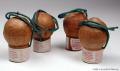

Blogin és Gyilkosgalóca már
említették nektek, hogy tegnap, nyilván az öszödi beszéd nyilvánosságra kerülésének
megünneplése gyanánt, elvitt engem a Kossuth térről a rendőrség. Valóban így történt, de nem
is akárhogy. Ilyen történetek az ötvenes évekre jellemzőek, bár ezt mondtam minden
korábbira is.
Heten voltunk: Blogin, Főnix, Gyilkosgalóca, Nagyörgy, Londi, Jarl és
én. A rendőrök ezt később ötnek számolták, de ne rójuk fel neki, biztos valamelyik
magát is beleszámolta, és így sikerült. Megebédeltünk egy jó kis étteremben,
megbeszéltük, hogyan fogunk rövidesen kicseszni néhány politikussal, majd a közeli
Kossuth tér felé vettük az irányt, hátha lesz ott valami érdekes. Hiszen nyilván nem
véletlenül pakolászták oda már napok óta a kordonokat. Talán még új Y-terv is
születik.
Az Akadémia utcán közeledtünk. Nyolc óra felé járt, már sötét volt. A
sarki Parlament Café előtt összefutottunk Szarka Ágotával, a Magyar Nemzet
újságírójával és társával, üdvözöltük egymást, és kérdeztük tőlük, mi hír van? Semmi
különös, felelte, sok-sok ávós, kerítések, és a Corvin közből idevonult mintegy
hat-nyolcszáz ember, akik mind utálják Gyurcsányt. Ja, ilyenből sok van.
Egyszer csak megállt mellettünk a jól ismert piros Lacetti,
és elkezdtek kiugrálni belőle a civilruhások. Egyikük, akik elegáns drótocskát viselt
a fülében, s hozzá Warrior sapkát, a járda szélére terelt mindannyiunkat, majd
körülvettek, és közölték, hogy igazoltatva leszünk. Na, micsoda meglepetés. Összébb
húzódtunk, ahogy parancsolták, helyet adtunk az egyenruhásoknak, hogy körülálljanak
minket, egyszer csak felkiáltott az egyik civil ruhás, aki mögöttem állt:
- Hé!
Az mi, ami a zsebéből kiesett?!
Azzal diadalmasan
mutatott valamire a földön. Hátraléptem, és bele is rúgtam abba a valamibe, mire az kigurult a
fényre. Egy tűzijáték-bomba volt. Pingponglabda nagyságú kemény kartongömb, hosszú
gyújtószállal. Az ilyet csőből lövik ki, és baromi nagyot robban.
- Mit
tudom én - feleltem. Persze tudtam nagyon jól, de nem akartam erőltetni a
felismerést.
- A maga zsebéből esett ki! - közölte a rendőr.
- Biztos benne?
-
Igen, láttam!
- Jó.
Minek vitatkozzak vele? Úgyse ismeri be, hogy nem látta.
Mert azt ugye nyilván senki sem hiszi, hogy ilyesmivel a zsebemben megyek egy tüntetésre,
ahol ötezer százalék, hogy az első rendőr úgy kipakoltat, hogy zsebem se marad. De ha
lenne is nálam, mitől esne ki? A zsebem nem lyukas, a cucc meg nem ugrál
magától.
Elkezdtek minket egyenként leigazoltatni. Engem félretoltak. A Warrior-sapkás
azzal az utánozhatatlan, szúrós rendőrnézéssel bámult, amivel nyilván azt kívánta
kifejezni, hogy ő most "túljárt az eszemen". Vele se vitatkoztam, minek? Örüljön, hogy
játszhat.
Persze eszem ágában sincs azt állítani, hogy ez a derék rendőrtiszt
intézkedett volna, hogy pont ott bukkanjon fel egy tiltott pirotechnikai eszköz, ahol
engem megállítanak. Ugyan. Nyilván ott hevert a fa tövében, csak a sötétben nem vette észre
senki. Korábban dobhatta valaki oda, talán csak percekkel korábban, amikor látta, hogy
jönnek a rendőrök, nehogy lebukjon vele. Ha mást állítanék, az rágalmazás lenne. Ezért nem
állítok semmit.
Külön gond volt, hogy pont nem volt nálam személyi. Annyira
hülye azért mégiscsak voltam, hogy otthon felejtsem. Elvileg ezért is előállíthatnak, de
csak végszükség esetén, akkor, ha nincs ott senki, aki hitelt érdemlően igazolni tudja,
hogy én vagyok én. Ennek ellenére közölték, hogy bevisznek és kész. Egy Kossuth téri
kormányellenes tüntetésen nyilván senki nem akadt, aki felismerte volna Tomcatet. A
rendőrök is csak véletlenül jelentették rádión már az igazoltatás megkezdése előtt, hogy
"itt a Tomcat, igazoltatjuk", a fülünk
hallatára.
Mindannyiunkat alaposan átkutattak, hátha bűnözők vagyunk. Kipakoltatták a
zsebeink tartalmát a Lacetti motorháztetejére, majd átvizsgálták a ruhánkat.
Természetesen semmi illegális nem került elő. Ekkor már több tucatnyian gyűltek körénk,
köztük több fotós és tévéoperatőr. A szenzáció természetesen az lett, amikor engem
beültettek az autóba. A civilek heves anyázásba, fújozásba és ávósozásba kezdtek, a vakuk
meg csattogtak. Elvittek két sarokra, a Szalay utcai kapitányságra. A Nemzeti Jogvédő
Alapítvány részéről kaptam jogi képviselőt, amit ezúton is köszönök.
Három óra
várakozás következett. A velem foglalkozó rendőrök egyébként mind tisztességesek voltak, bár
a "csak parancsra tettem" indoklás már Nürnbergben se érdekelt senkit. Akik az
igazoltatás során körülvettek, még bocsánatot is kértek az eljárásért.
- Semmi baj
- mondtam - végül is ezért fizeti magukat Izrael Állam.
A rendőrök összenéztek,
majd egyikük halkan így felelt:
- Hát... igen.
A három óra elteltével
végre sikerült megállapítani a személyazonosságomat. Sajnos nagyon lassúak ezek a
rendőrségi számítógépek, pont addig tart nekik előszedni egy adatrekordot, amíg a
Kossuth téren véget ér a tüntetés. Jött egy rendőrtiszt, és a kezembe akart nyomni egy
sajtpapírt.
- Írja alá.
- Mi ez?
- Lefoglalási jegyzőkönyv.
- Miről?
- Hát
hogy lefoglaltuk magától a pirotechnikai eszközt.
- Dehogy foglaltak le maguk tőlem
bármit is.
- Mindegy, írja alá.
- Hogyne, és azzal el is ismerném, hogy nálam
volt. Hiszen itt az áll, hogy én vagyok a lefoglalást elszenvedő.
- Lefoglalni csak
attól lehet, aki birtokolja az adott dolgot - toldotta meg az ügyvéd.
- Ez nem így van,
lefoglalni akárkitől lehet.
- Ezzel az erővel lefoglalhatná tőlem a fát is, ami
mellett álltam.
- Ez csak formaság, írja alá.
- Nem írom.
- Ezzel nem
akadályozza meg az eljárás lefolytatását.
- De azt igen, hogy rám húzzanak valamit,
amit nem követtem el.
- Akkor nem írja alá?
- Nem.
- Hát jó.
További
várakozás után előkerült egy előadó hölgy, s felkísért minket az emeletre, egy irodába.
Végre hozzákezdtek a kihallgatásomhoz. Azért egyszer még ő is bepróbálkozott a
lefoglalási jegyzőkönyvvel, hátha meggyőz, és aláírom. Nem írtam alá.
- Közlöm
Önnel, hogy eljárást indítunk Ön ellen ipari robbanóanyaggal és pirotechnikai eszközzel
való visszaélés gyanúja miatt. Kíván vallomást tenni?
- Kívánok.
Elmondtam,
amit itt is leírtam, hogy az én zsebemből nem esett ki semmi, nem tudom, honnan került
oda.
- Hát biztos onnan, ahol van még több is! - szellemeskedett az előadó.
-
Most arra célozgat, hogy otthon egy egész láda ilyet tartok, ugye?
- Hát én nem
célozgatok semmire, én csak azt mondom, hogy ahonnan ezt hozta, ott biztos van még.
-
Na, még szerencse, hogy nem célozgat.
Kinyomtatta. Hemzsegett a hibáktól.
Kijavítgattam tollal. Erre közölte, hogy nem nyomtat újat, mert drága a papír, javítgassam
ki a másik két példányt is, és jó lesz úgy.
- És főleg olvasható.
- Az
mindegy.
- Nem mindegy, így nem írom alá. Tisztázza le, nyomtasson újat.
- Sajnos nem
lehet.
- Akkor nem írom alá.
Végül csak kinyomtatta. Remélem, nem kell
elárverezniük a szép izraeli vízágyúkat a nagy papírpocsékolás miatt.
Szóval ez
történt ma velem, szeptember 17-én, az öszödi beszéd kiszivárgásának évfordulóján. A
Kossuth tér közelébe se mehettem, és jé, pont egy bomba esett ki a zsebemből igazoltatás
közben. Velem mindig ilyen béna dolgok történnek, kihallgatják a telefonomat a liftben,
miközben terrorcselekményre készülök, meghallják Budáról, hogy mit beszélgetek Pesten,
és úgy verek meg feltörekvő újságírókat, hogy senki sem hallja, ahogy torka szakadtából kiabál a
lépcsőházban... Biztos azért, mert buta náci vagyok, és a cipőmet sem tudom bekötni egyedül.
Most persze nagy bajban lennék, ha szokásom szerint egyedül megyek a tüntetésre, és
nincs ott senki, amikor véletlenül kiesik a zsebemből ez a kis játékszer. Így azonban
éppen nyolc tanúm van rá, hogy mi történt, és Szarka Ágota diktafonja is végig működött.
Meglátjuk, mi lesz ebből.